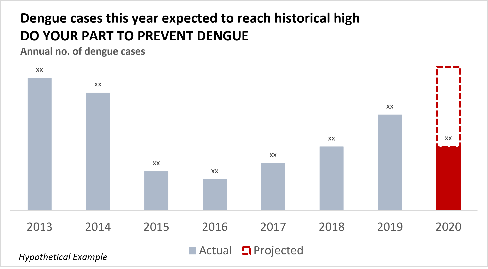

Example 1 - Dengue Trends in 2020
This visualisation was published by the National Environment Agency (NEA) in Singapore on 3 June 2020, as part of a press release to warn Singapore about the spike in dengue cases even as the COVID-19 pandemic was raging, and to urge collective efforts to prevent dengue. Broadly, the chart was intended to complement NEA's message that the trend of dengue cases from January to April 2020 was abnormally high in Singapore's history.
Source: NEA (3 June 2020)
Data (What they are showing)
Chart more suitable for data exploration than communicating multiple messages
The visualisation creator was trying to convey NEA's messages that in 2020, the annual trend of (a) weekly and (b) total dengue cases was abnormally higher than trend of dengue cases in specific years by plotting quantitative data - number of dengue cases every week - over 52 weeks in a year, from 2013 to 2020.
The chart shows only the weekly number of dengue cases. However, NEA's press release described the dengue trends both in terms of "weeks" and "months". This means the reader has to mentally calculate which month each week in the chart belongs to, while referring to the text. The creator could have aggregated the weekly number of dengue cases by month to reduce this cognitive effort.
Showing many years in the chart also makes it difficult for the viewer to understand which are the focal data in NEA's message.
Not showing the total number of dengue cases from 2013 to 2019 and projected total dengue cases in 2020 makes it harder for the reader to believe that the trend of high dengue cases from April to May 2020 would continue, given that it coincided with the 2020 Circuit Breaker period, where more people stayed at home and were exposed to mosquitoes in their neighbourhood.
Idiom (How they are showing it)
Chart junk
There are too many colours used, and it is not intuitive what colour is related to which year.
The colours of the 2014, 2017 and 2019 lines are also very similar, making it more challenging for users with some colour blindness to see.
The reader has to exert extra cognitive effort to link each year and colour on the legend, to the colour of the line on the chart, before they can see the trend of the target year.
In addition, showing too many line markers (52 lines for 52 weeks) clutters the chart and is redundant. It would be easier to read if the line markers were divided into months instead.
Hard to focus
The lines are all of the same thickness and there is no salient colour that the reader can focus on. It is difficult for the reader to know which year(s) they are supposed to look at, or compare.
Small font
The original visualisation on NEA's webpage is of poor resolution and the text on the figure is small, making it difficult to see each data point clearly.
Given that the intended messages are of high public health importance, the data should be
conveyed more efficiently with a higher font size and resolution.
Downstream communication issues can happen as the media might either not replicate
the chart data
accurately, or simply reproduce the chart with suboptimal results.
(Right: screenshot of a visualisation that seems
truncated, reproduced by TODAY based on NEA data)
Suggestions to Improve
1. 2 Charts to Show Expected Trend
Since this chart is intended for communication to the public, and not data exploratory analysis by NEA, perhaps the creator could have split this chart into 2 line charts with different data to convey different meanings. Specifically, NEA mentioned in its press release that:
-
"Singapore has not seen such a high weekly number of dengue cases since the peak years in 2013 and 2014"
-
"The number of dengue cases this year is expected to exceed the 15,998 cases reported in 2019, and may even surpass the 22,170 cases reported in 2013"
Suggestion: Using a column chart, the creator could have focused on the total historical number of dengue cases from 2013 to 2020 (1 bar per year), and show the historical (solid line) and projected (stacked on top of the 2020 solid bar) total number of cases in 2020.
I illustrate my suggestions in the following chart:

Suggestion: Using a line chart, instead of showing every year of data, the creator can use interactivity to show data by year, or focus on the average or historical highest number of weekly dengue cases from 2013 to 2019 (black line), and compared this trend with 2020's historical number of weekly dengue cases (red line). This chart would have communicated more clearly that 2020 has an abnormal trend of dengue cases compared to previous years.
The weekly case data can be aggregated into monthly data to be better aligned with NEA's messages and avoid confusing the user.
If projected data is available, especially because of strong correlation between dengue and temperature, NEA could possibly illustrate that the trend of dengue cases from January to June 2020 was expected to continue in the rest of 2020 if action was not taken.
I illustrate my suggestions in the following chart:

Suggestions to Improve
2. Polar Plot to Show Abnormal Weekly Trends
Instead of a line chart, NEA could also choose to use a polar plot to show the weekly trends in dengue across months and years more clearly. The creator could bold the line for 2020 to make it more salient to the user. An example of a polar plot showing data with monthly seasonality across years is shown on the right.
Image Source